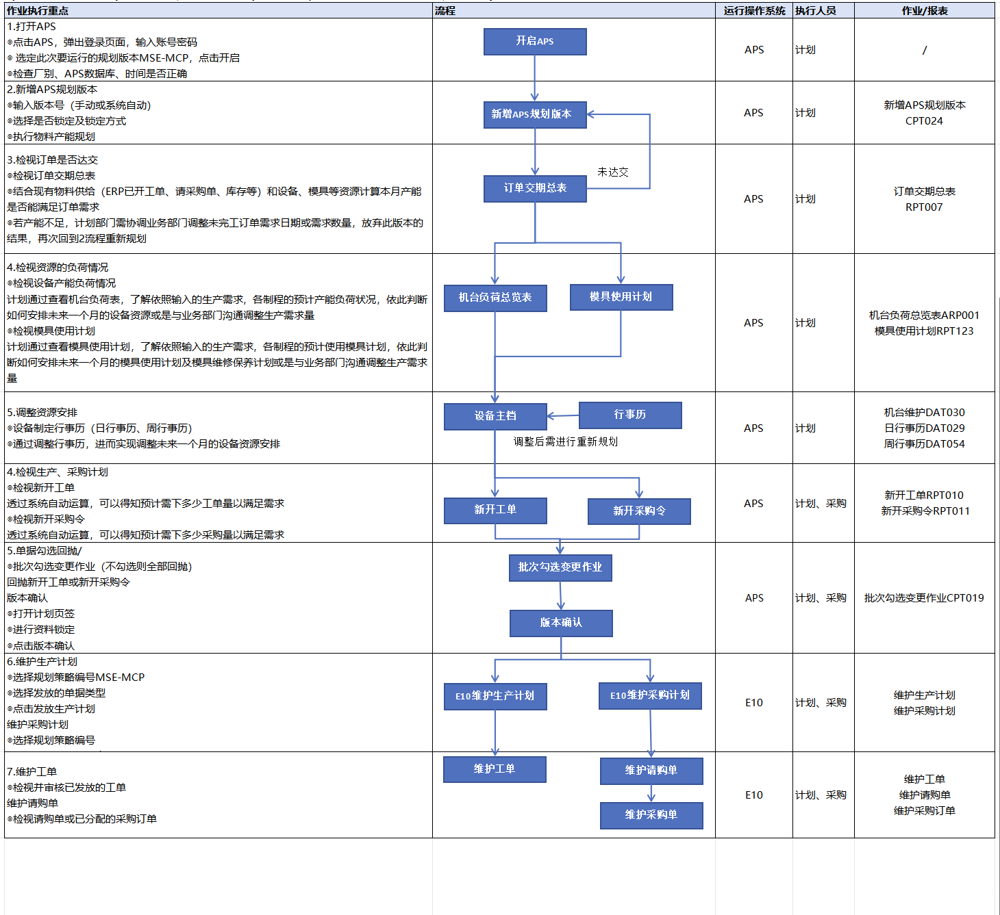
月度产能规划是从产能评估到工单下发的全流程闭环管理。计划部门依据订单需求，结合现有物料供给、设备资源、模具资源等约束条件进行产能规划与平衡，确保月度生产计划的可执行性。
重点说明：
1）判断目前产能是否满足订单的需求。
2）将APS规划后的结果（建议新开工单、建议新开采购单）回抛至E10，在E10中下发成已审核的工单、采购订单。
月度产能规划是从产能评估到工单下发的全流程闭环管理。计划部门依据订单需求，结合现有物料供给、设备资源、模具资源等约束条件进行产能规划与平衡，确保月度生产计划的可执行性。
重点说明：
1）判断目前产能是否满足订单的需求。
2）将APS规划后的结果（建议新开工单、建议新开采购单）回抛至E10，在E10中下发成已审核的工单、采购订单。

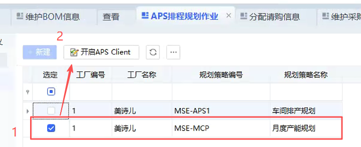
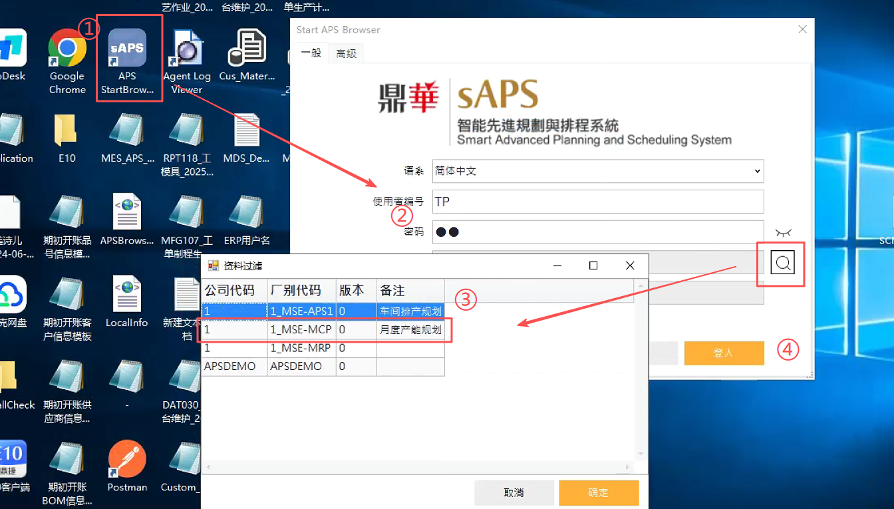
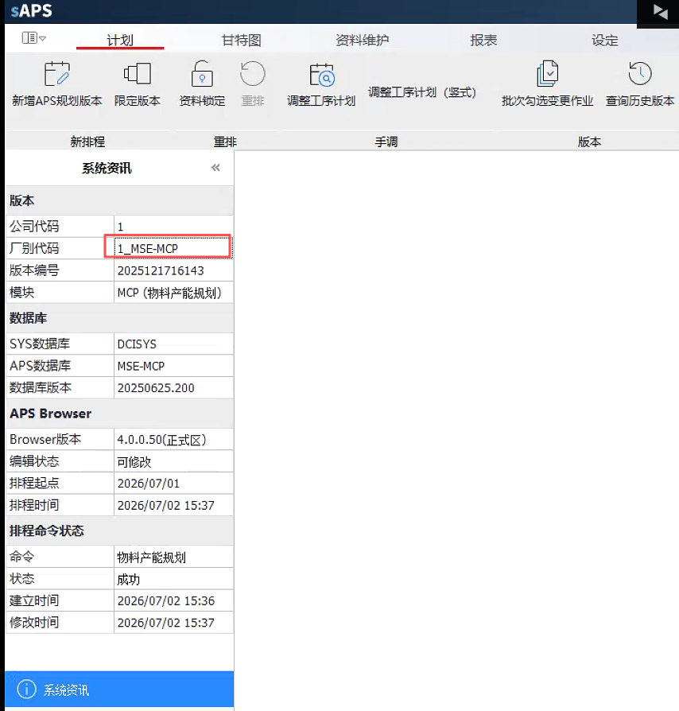
方式一：在E10的APS排程规划作业，选定此次要运行的规划版本MSE-MCP，点击APS Client，系统自动跳转开启APS。
方式二：双击打开APS，输入账号密码，在搜索框中选择此次要运行的版本MSE-MCP，点击登录后进入APS。
打开APS后检查厂别、APS数据库、时间是否正确，避免进错版本。
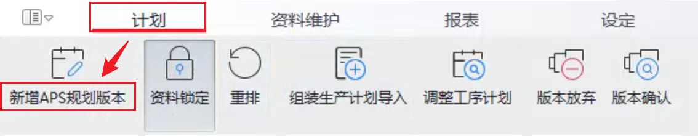
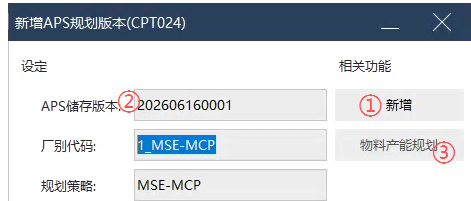
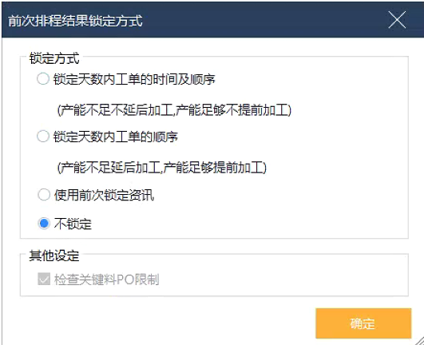
计划 >> 新增APS规划版本
1. 新增APS规划版本会让APS重新从E10和MES获取最新的数据，再进行排程运算。只有当APS需要抓取E10或MES的最新数据时才去新增APS规划版本，其他情况只需要进行重排即可。
2. 排程和重排都需要选择"不锁定"的选项（后续模拟时可按需调整）。
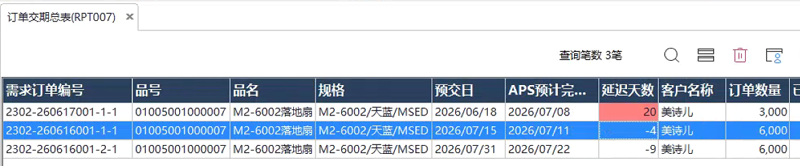
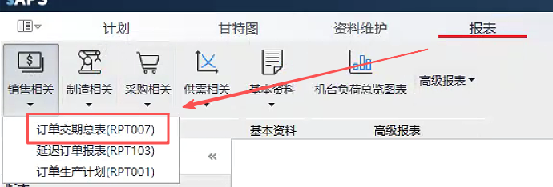
报表 >> 销售相关 >> 订单交期总表(RPT007)
1. APS排程完成后，会依照订单需求结合现有物料供给（ERP已开工单、请采购单、库存等）和设备、模具等资源计算本月产能是否能满足订单需求。
2. 若产能不足订单未达交，计划部门需协调业务部门调整未完工订单需求日期或需求数量，放弃此版本的结果。
3. 线下协调后，再次回到新增APS规划版本的流程。

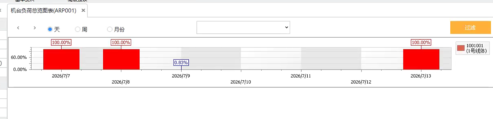
报表 >> 制造相关 >> 机台负荷总览表（ARP001）
1. 计划通过查看机台负荷表，了解依照生产需求的预计产能负荷状况，依此判断如何安排未来一个月的设备资源或是再与业务部门沟通调整生产需求。
2. 设备产能由行事历设置的时间转换而来，若要调整产能则需调整行事历。
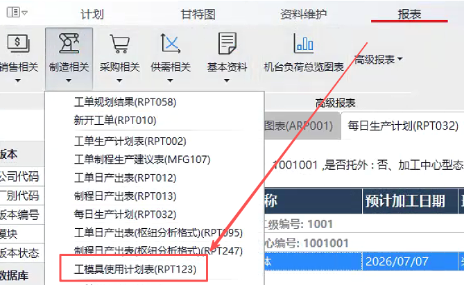

报表 >> 制造相关 >> 模具使用计划（RPT123）
1. 通过查看模具使用计划，了解各制程预计使用模具情况，依此安排未来一个月的模具使用计划及模具维修保养计划。
2. 同时根据模具的负荷决定是否与业务部门沟通调整生产需求量。
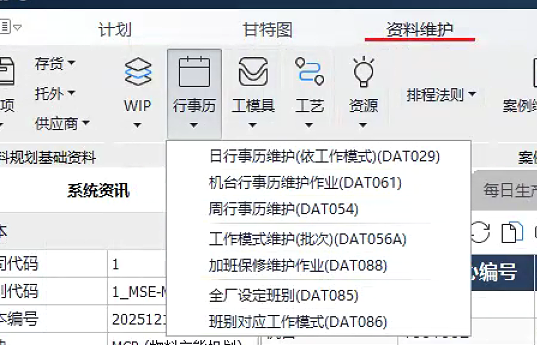

资料维护 >> 行事历 >> 工作模式维护(DAT056A)
执行步骤：工作模式 >> 周行事历 >> 日行事历 >> 机台行事历
1. 工作模式：定义一天内具体时段的工作状态，如 08:00~16:00 是工作时段，其余是非工作时段。
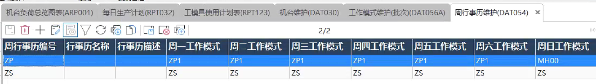
资料维护 >> 行事历 >> 周行事历维护(DAT054)
执行步骤：工作模式 >> 周行事历 >> 日行事历 >> 机台行事历
1. 定义一周七天（周一至周日）每天的工作模式，例如：周一至周六用"工作模式ZP1"，周日休息。
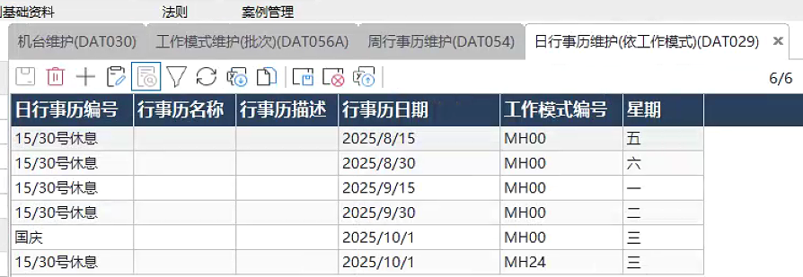
资料维护 >> 行事历 >> 日行事历维护(DAT029)
执行步骤：工作模式 >> 周行事历 >> 日行事历 >> 机台行事历
定义特殊日期（如国定假日、加班日），可以覆盖周行事历的设定。
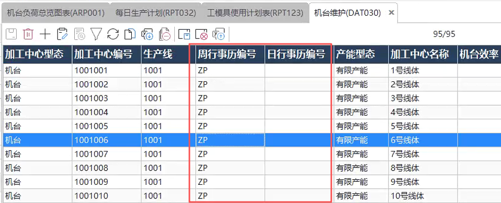
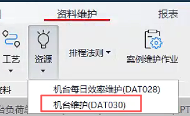
资料维护 >> 资源 >> 机台维护（DAT030）
执行步骤：工作模式 >> 周行事历 >> 日行事历 >> 机台行事历
1. 进入机台维护（DAT030），给每个机台维护对应的行事历（支持导入导出功能，可导出Excel后批量调整再导入）。
2. 实现对未来一个月设备资源的精细化安排，调整内容包括：设备可用时间、班次安排、停机维护计划等。
3. 调整后的行事历将直接影响APS运算结果，确保排产可行性。


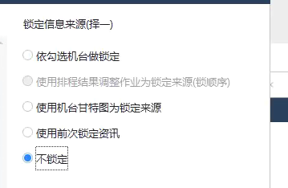
1. 基于前面做的模具/设备的产能调整，系统重新进行运算。
2. 排程模组：
— 物料规划：不考虑产能，算物料供需
— 产能规划：基于产能的调整，进行整体产能运算，不再重算物料
— 物料产能规划：重算物料的供需和现有产能的负荷
3. 若需再调整资源：资源负荷 > 调整资源 > 重新运算验证。
4. 若需再调整需求：放弃此版本规划 > 调整需求 > 新增APS版本 > 结果验证。
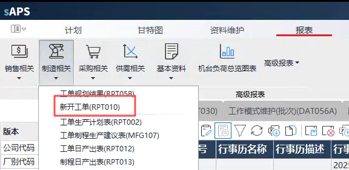
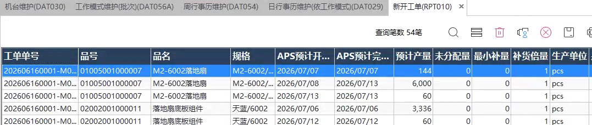
报表 >> 制造相关 >> 新开工单（RPT010）
1. 透过系统自动运算，得知预计需下多少工单量以满足需求。
2. 重点确认工单数量、日期的合理性。
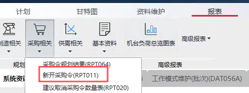
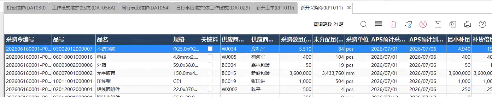
报表 >> 制造相关 >> 新开采购令（RPT011）
1. 透过系统自动运算，得知预计需下多少采购量以满足需求。
2. 结合需求及采购参数（最小补量、补货倍量等），重点确认数量、日期的合理性。
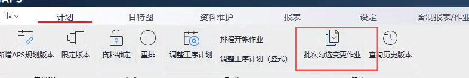
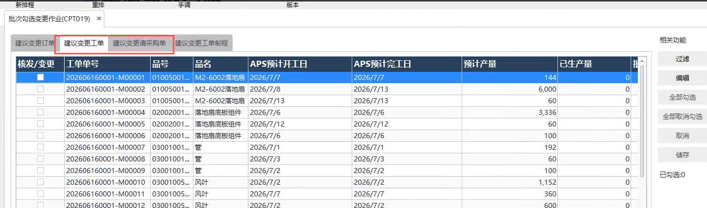
计划 >> 批次勾选变更作业（CPT019）
1. 选择下发的单据：【编辑】选择性勾选需要回抛的新开工单或新开采购令。
2. 针对要下发的单据，勾选【核发/变更】，点击【储存】，保留勾选的单据。

计划 >> 版本确认/放弃
1. 资料锁定之后才会出现版本确认/放弃的按钮。
2. 版本确认后，会将可下单的工单推送到E10，后面在E10中接续进行开单的操作。
3. 版本放弃是放弃此版的规划结果，下次可重新开启一个新版本。
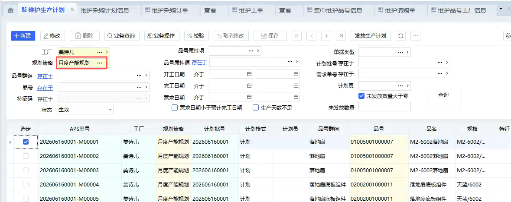
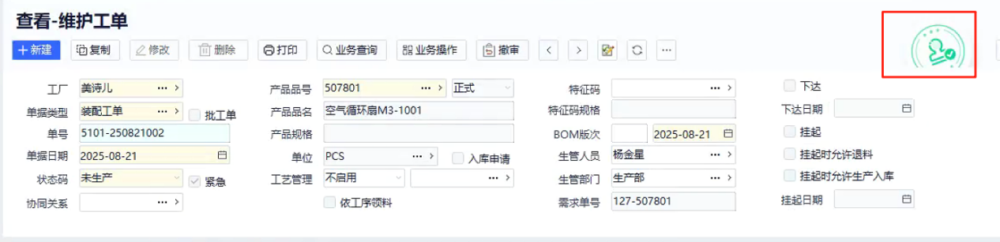
1. 进入E10系统。
2. 根据APS排程规划时所使用的规划策略，正确选择规划策略编号MSE-MCP。
3. 勾选单据后点击【发放生产计划】，将单据转到【维护工单】内。
4. 在维护工单中检视并审核已发放的工单。
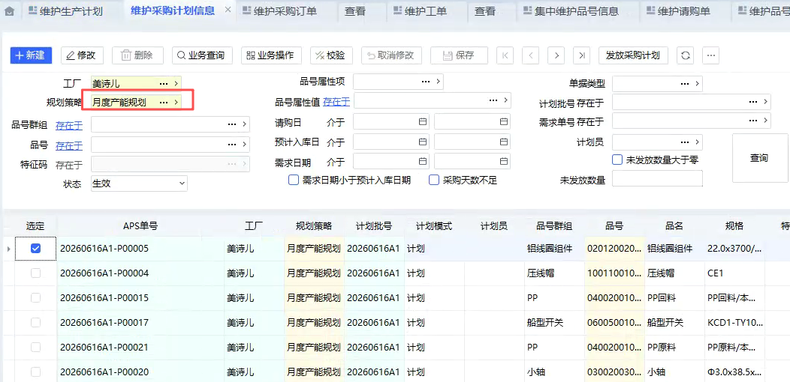
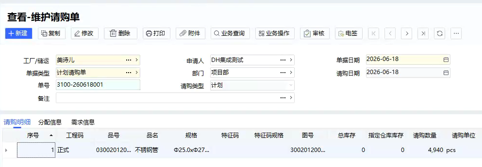
1. 进入E10系统。
2. 根据APS排程规划时所使用的规划策略，正确选择规划策略编号MSE-MCP。
3. 勾选单据后点击【发放生产计划】，将单据转到【维护请购单】内。
4. 由采购人员将请购单分配为采购订单。